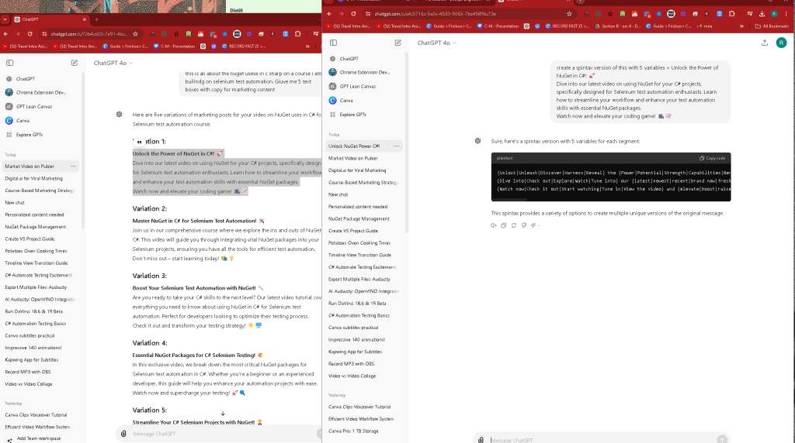

Why use spintax?
create variations with ease

Sure, here's a spintax version with 5 variables for each segment:
{Unlock|Unleash|Discover|Harness|Reveal} the {Power|Potential|Strength|Capabilities|Benefits} of NuGet in C#! 🚀
{Dive into|Check out|Explore|Watch|Tune into} our {latest|newest|recent|brand new|fresh} video on {using|leveraging|utilizing|employing|applying} NuGet for your C# projects, specifically {designed for|tailored for|aimed at|created for|intended for} Selenium test automation {enthusiasts|fans|experts|professionals|aficionados}. {Learn how to|Discover how to|Find out how to|See how to|Get tips on how to} {streamline|simplify|enhance|optimize|improve} your workflow and {enhance|boost|improve|advance|elevate} your test automation skills with {essential|key|important|vital|crucial} NuGet packages.
{Watch now|Check it out|Start watching|Tune in|View the video} and {elevate|boost|raise|improve|enhance} your {coding game|programming skills|development prowess|software expertise|coding proficiency}! 🎥📈
This spintax provides a variety of options to create multiple unique versions of the original message.
Why Use Spintax: Unlocking the Power of Dynamic Content Creation
In the ever-evolving world of digital marketing and content creation, the ability to produce diverse and engaging content rapidly is crucial. One of the most effective tools to achieve this is Spintax (SPINning synTAX), a powerful method for generating multiple variations of text. But why should you use Spintax? Let’s dive into its benefits and practical applications.
What is Spintax?
Spintax is a system of text syntax used to create multiple versions of a piece of content by spinning synonyms or phrases within a given text. The structure typically involves curly braces {} and a pipe | symbol to separate different options. For example, the Spintax for "I love programming" could look like this: {I|We|They} {love|enjoy|like} {programming|coding|developing software}. This simple structure allows the generation of numerous unique sentences from a single template.
Benefits of Using Spintax
-
Content Diversity:
-
Spintax enables the creation of numerous variations of the same content, making it easier to avoid duplicate content issues. This is particularly useful for SEO, as search engines prefer unique content.
-
Enhanced SEO:
-
Search engines penalize duplicate content, which can hurt your website’s ranking. By using Spintax, you can generate unique content variations, thereby improving your SEO efforts and increasing your visibility on search engines.
-
Time Efficiency:
-
Writing unique content for each platform or campaign can be time-consuming. Spintax automates this process, saving time and allowing you to focus on other important aspects of your marketing strategy.
-
Cost-Effective:
-
Hiring writers to create unique content for each variation can be expensive. Spintax reduces the need for multiple content writers, thus lowering costs.
-
A/B Testing:
-
Spintax allows you to test different versions of your content to see which performs better. This is crucial for optimizing your marketing strategies and improving engagement rates.
-
Localized Content:
-
If you’re targeting different regions, Spintax can help create content tailored to specific locales. This personalized approach can significantly enhance user engagement.
Practical Applications of Spintax
-
Email Marketing:
-
Create multiple versions of email content to avoid spam filters and increase open rates. Personalized email variations can also enhance customer engagement.
-
Social Media Posts:
-
Generate different versions of posts for social media platforms to maintain freshness and appeal to diverse audiences.
-
Blog Posts and Articles:
-
Produce variations of blog posts to avoid content duplication while still delivering valuable information to your audience.
-
Product Descriptions:
-
For e-commerce sites, Spintax can be used to create unique product descriptions, making each product page distinctive and improving SEO.
-
Ad Copy:
-
Create multiple ad variations to test which copy converts the best, thereby optimizing your ad spend and improving ROI.
Best Practices for Using Spintax
-
Quality Over Quantity:
-
Ensure that the generated variations maintain high-quality content. Poorly spun content can harm your brand’s reputation.
-
Manual Review:
-
Always review spun content manually to ensure coherence and readability. Automated tools can sometimes produce awkward or nonsensical text.
-
Use Synonyms Wisely:
-
Choose synonyms that fit naturally within the context to maintain the original meaning and flow of the text.
-
Limit Spinning Depth:
-
Avoid over-spinning, which can lead to content that sounds mechanical or unnatural. Keep it simple and readable.
Conclusion
Spintax is a valuable tool for any content creator or digital marketer looking to enhance their content strategy. By generating multiple unique variations from a single template, Spintax can improve SEO, save time and costs, and allow for effective A/B testing. However, it’s important to use Spintax wisely to maintain content quality and ensure the best results. Embrace the power of Spintax and unlock the potential of dynamic content creation for your business.
Imported from rifaterdemsahin.com · 2024